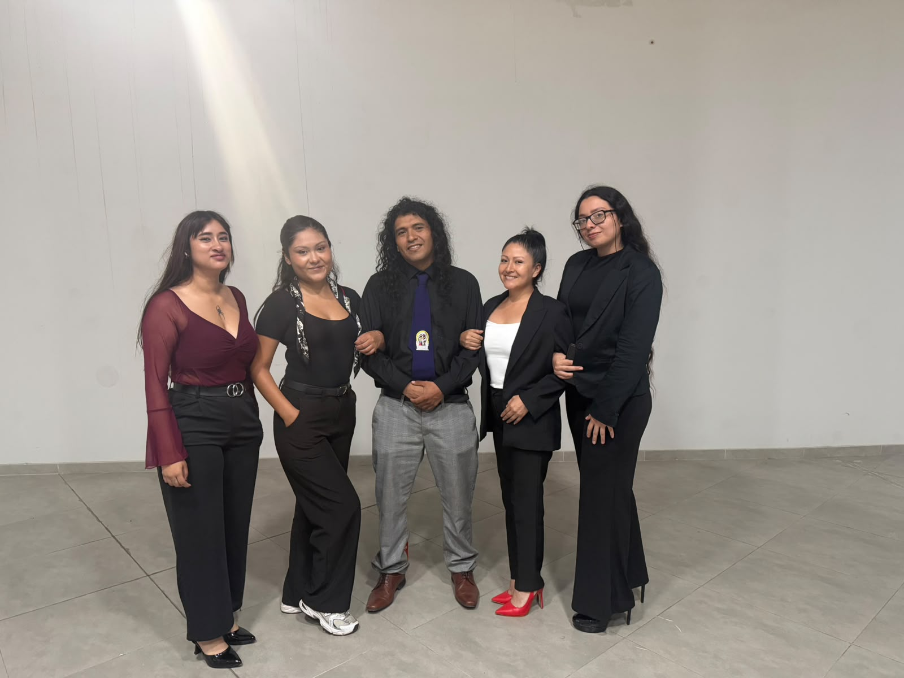
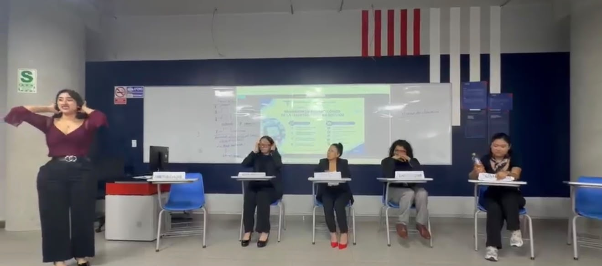

Definición
Resistencia a la insulina y deterioro progresivo de las células beta pancreáticas.
Responsable: Alejandra LolekODS 3 · Salud y bienestar
Impacto en la salud integral
Este blog académico es un portafolio digital que reúne evidencias de aprendizaje, producción académica y reflexión sobre el abordaje terapéutico de la diabetes mellitus tipo II en adultos.
Explorar el contenidoEnfoque integral
Prevención · Tratamiento · SeguimientoLectura académica
Una síntesis visual de los ejes desarrollados por el equipo en el texto expositivo.
Resistencia a la insulina y deterioro progresivo de las células beta pancreáticas.
Responsable: Alejandra LolekLa terapia farmacológica se individualiza según las condiciones metabólicas y clínicas.
Responsables: Dorca y RojasLa titulación segura considera edad y función renal y hepática.
Responsables: Rojas y DorcaEducación, seguimiento y empatía favorecen el cumplimiento terapéutico.
Responsable: Hans CastroLa glucemia y la hemoglobina glucosilada orientan el seguimiento integral.
Responsable: Alejandra LolekPrevenir el daño renal, ocular, nervioso y cardiovascular es una prioridad.
Responsable: Valeria ChoqueEl tiempo de enfermedad exige reajustes periódicos y hábitos sostenibles.
Responsable: Roxana HaroQuiénes somos
Estudiantes comprometidos con la investigación y la promoción de una salud integral basada en evidencia.

Agrega la imagen grupal en assets/imagen-grupal.jpeg
Integrante
Integrante
Integrante
Integrante
Integrante
Planificación investigativa
La matriz permite organizar las ideas centrales, subtemas, fuentes y evidencias del trabajo. Funciona como una guía para delimitar el tema y mantener una progresión lógica durante la producción del texto expositivo.
Descargar matrizExplora el documento sin salir de la página.
El documento organiza el tema general, subtemas, responsables, desarrollo argumentativo, comentarios y referencias bibliográficas del equipo.
Ruta de producción
Organización del proceso para desarrollar un texto expositivo claro, coherente y sustentado.
Precisar el problema: tratamiento farmacológico de la diabetes tipo II en adultos, su relación con el ODS 3 y el propósito informativo.
Asignar subtemas y responsabilidades: definición, tratamiento, posología, adherencia, control metabólico, complicaciones y evolución.
Contrastar artículos científicos, guías clínicas y tesis para sustentar cada idea con referencias académicas confiables.
Construir párrafos con definición, explicación, comentario crítico y conexión lógica entre los aportes del equipo.
Corregir coherencia, ortografía, citas y formato; después integrar las evidencias multimedia en el portafolio.
Producción académica
La diabetes mellitus tipo II constituye un desafío de salud pública que requiere un abordaje individualizado, continuo e integral. El siguiente texto presenta conceptos fundamentales sobre su tratamiento farmacológico y la importancia del seguimiento clínico.
Descargar documento completoLa diabetes mellitus tipo II es una enfermedad metabólica crónica caracterizada por niveles elevados de glucosa en sangre. Se relaciona principalmente con la resistencia a la insulina y con una disminución progresiva de la capacidad de las células beta pancreáticas para producirla. Factores genéticos, ambientales, nutricionales y relacionados con el estilo de vida pueden contribuir a su aparición.
La hiperglucemia sostenida puede afectar vasos sanguíneos y nervios, por lo que la detección oportuna y el control metabólico son esenciales para reducir el riesgo de complicaciones.
El tratamiento se establece de acuerdo con las características clínicas de cada persona, sus niveles de glucosa, comorbilidades y objetivos terapéuticos. La metformina suele considerarse una opción inicial frecuente, mientras que otros grupos farmacológicos pueden incorporarse o combinarse según la respuesta, la tolerancia y el criterio del profesional de salud.
La adherencia comprende el uso correcto de los medicamentos, la asistencia a controles y la incorporación de hábitos saludables. El monitoreo de glucosa, la alimentación equilibrada, la actividad física y la educación del paciente favorecen decisiones oportunas y un mejor control metabólico.
Sin un control adecuado, la hiperglucemia puede asociarse con complicaciones microvasculares, como daño renal, ocular y nervioso, y macrovasculares, como enfermedad cardiovascular. La evolución es variable; por ello, el seguimiento periódico permite identificar riesgos y adaptar el plan terapéutico.
El tratamiento farmacológico de la diabetes tipo II debe comprenderse como parte de una estrategia integral y personalizada. La educación, la adherencia y el acompañamiento del equipo de salud son componentes indispensables para proteger la calidad de vida y contribuir al ODS 3: Salud y Bienestar.
Síntesis temática
Ideas clave para comprender el tratamiento
Evaluación individual: cada plan se adapta a la condición clínica y objetivos del paciente.
Tratamiento combinado: los medicamentos se acompañan de alimentación, actividad física y educación.
Seguimiento continuo: el control periódico ayuda a prevenir complicaciones y ajustar decisiones.

Intercambio de saberes
En esta evidencia se presenta la exposición del equipo sobre los fundamentos de la diabetes tipo II, las alternativas farmacológicas y la relevancia de la adherencia para el control metabólico.
Ver grabación del panelRegistro audiovisual
Evaluación académica
Previsualiza o descarga el guión utilizado para organizar la presentación y la evaluación parcial del proyecto.
Ver video del examenEvidencia audiovisual
Registro audiovisual de la presentación académica del equipo.
Cierre institucional
Expresamos nuestro agradecimiento a la asesora Mónica Maritza Elías, a la Universidad César Vallejo y a los docentes del curso por su orientación, compromiso y acompañamiento en este proceso de aprendizaje.
Línea de investigación: Salud integral humana